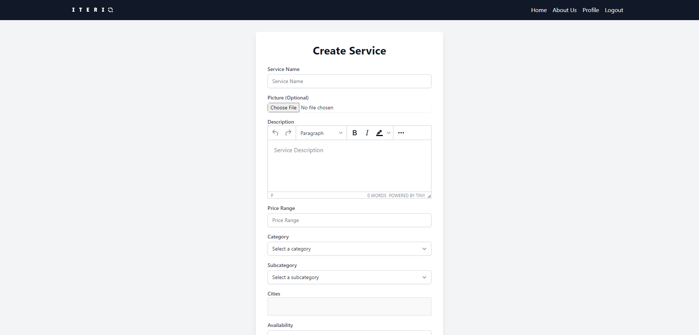
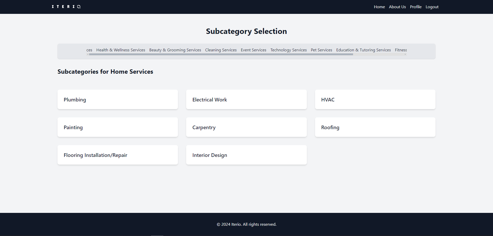
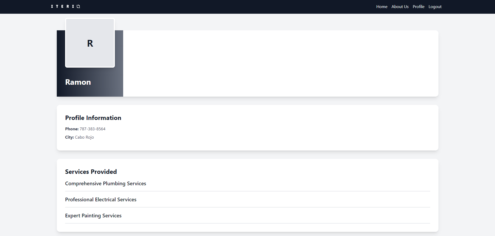

Iterio, where your skills shape your future
Iterio helps users grow there skills and create opportunities. With Iterio, users can showcase their talents, list services, and connect with other users who may need others skills set, while also finding reliable service providers. Join our supportive community today and start building your path to success by exploiting your skills and knowledge.
Features
Become Service Provider
Start by creating a profile and setting it up as a service provider. After that, go into your profile and create your desired service. As soon as you press "create," the service will be available for other users to view. This allows potential clients to see what you offer and contact you if they are interested. Make sure to provide detailed and accurate information to attract more users to your service.
Find & Book Service
After signing up, you can go ahead and search for your needed services. The platform offers a variety of services, making it easy to find what you're looking for. Simply use the search bar or browse through the categories to discover available options. Once you find a service that meets your needs, you can view the provider's profile for more details. Finally, you can contact the service provider directly to make arrangements or ask any questions.
View Provider Profiles
You can visit the provider profile to discover a wide array of services offered by the same user. This lets you get their phone number, making it easy to contact them directly. If you enjoy the service provided by this user, you may find other services you need that are also provided by them. By browsing through the profile, you can gain insights into the quality and range of their services. This can help you make informed decisions when selecting the best provider for your requirements.
Developers

Inspiration
Inspiration for Iterio stemmed from a personal experience: needing plumbing services but being unaware that a plumber was located right next door. This highlighted the gap in accessibility and visibility for local service providers. Recognizing this, we envisioned Iterio as a platform that allows service providers to showcase their expertise and connect with potential clients efficiently. By giving professionals like plumbers an online presence, Iterio facilitates business growth and community connection. Our mission is to empower skilled individuals to build their reputation and expand their clientele. Through Iterio, we aim to bridge the gap between service providers and those in need of their skills. Ultimately, Iterio is designed to foster growth and opportunity for everyone involved. We believe that with the right tools and visibility, every service provider can achieve their full potential.
Iterio Repository